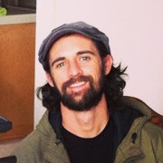
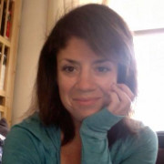

Team
Jon Joiner
 If Jon Joiner isn't riding a bicycle, DIY-ing crafty goods, road-tripping in his Vanagon, or taking a GoPro-strapped drone to unexplored heights, he's likely making films. Actually, he's often found wielding a camera while riding his bike, crafting stuff, and road-tripping, too. His wide range of interests have unintentionally made him one of the world's greatest multitaskers. Over the past seven years, people have asked Jon to turn his camera in the direction of their weddings, concerts, and conferences. He's personable enough that people have also asked him to collaborate on documentaries and short films. He and his wife are both cat people, but don't let that stop you from reaching out.
If Jon Joiner isn't riding a bicycle, DIY-ing crafty goods, road-tripping in his Vanagon, or taking a GoPro-strapped drone to unexplored heights, he's likely making films. Actually, he's often found wielding a camera while riding his bike, crafting stuff, and road-tripping, too. His wide range of interests have unintentionally made him one of the world's greatest multitaskers. Over the past seven years, people have asked Jon to turn his camera in the direction of their weddings, concerts, and conferences. He's personable enough that people have also asked him to collaborate on documentaries and short films. He and his wife are both cat people, but don't let that stop you from reaching out.
Dane Johnson
Dane Johnson is a writer, lyricist, and lover of people. His objective is to tell meaningful stories that dispel ignorance and endorse hope.
Crystal Villegas
Crystal is a Bay Area-based visual designer with a passion for chocolate, oops, she meant cause-marketing.
Stephanie Kartalopoulos
Feather Coffee's Communication Consultant, Stephanie Kartalopoulos is a college professor, freelance writer, poet, yogi, and runner living in Savannah, GA. She is brought to life by creating community wherever she goes and loves--more than anything else--to gather her friends together for potluck dinners and talk about anything and everything late into the night. She is excited to join the Feather Coffee team because of her belief that helping the world around her should be fun, collaborative, and incredibly yummy.